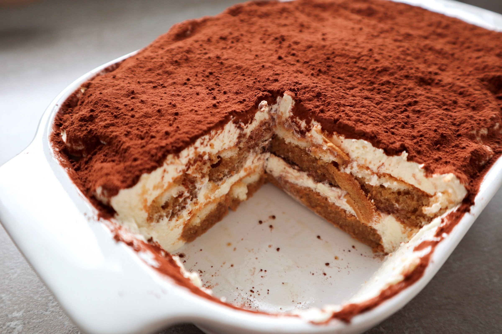

Tiramisu
De tiramisu is een heerlijk Italiaans nagerecht.
Ingrediënten
- 250 ml slagroom
- 4 eidooiers
- 70 g fijne kristalsuiker
- 400 g mascarpone
- 400 ml warme espresso
- 2 el amaretto
- 30 lange vingers
- cacaopoeder
Bereidingswijze
- Klop in een mengkom de slagroom stijf. Klop in een andere mengkom de eidooiers met de fijne kristalsuiker schuimig, voeg de mascarpone toe en klop tot een homogeen mengsel.
- Spatel de geklopte slagroom met een spatel door het mascarponemengsel. Zet de kom met room aan de kant.
- Meng in een kom de espresso met de amaretto. Doop de lange vingers een voor een in de koffie en leg zen in een grote rechthoekige schaal (20 x 25 cm, ongeveer 7 cm hoog). Bedek ze met een 2 cm dikke laag room. Herhaal de voorgaande stappen tot alle ingrediënten op zijn. Eindig met een laag room.
- Dek de schaal af met plasticfolie en laat de tiramisu minimaal 2 uur in de koelkast afkoelen en opstijven (liefst 1 nacht).
- Bestuif, vlak voor het serveren, de bovenkant van de tiramisu met een dikke laag cacaopoeder.

Tip Je kunt de tiramisu 3 tot 5 dagen nar bereiding in de koelkast bewaren.